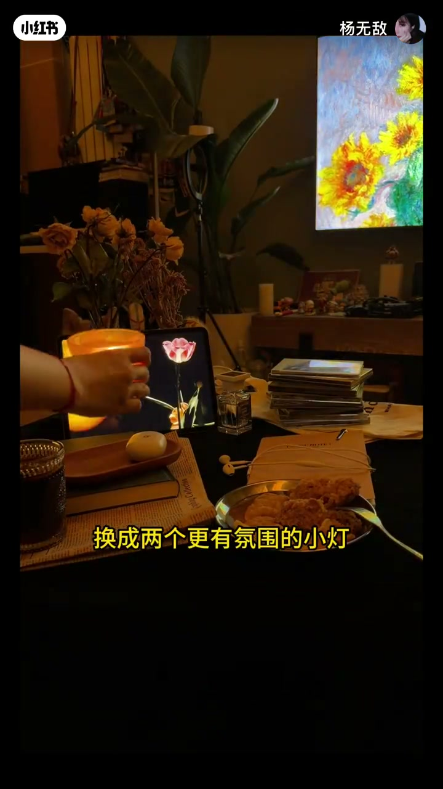
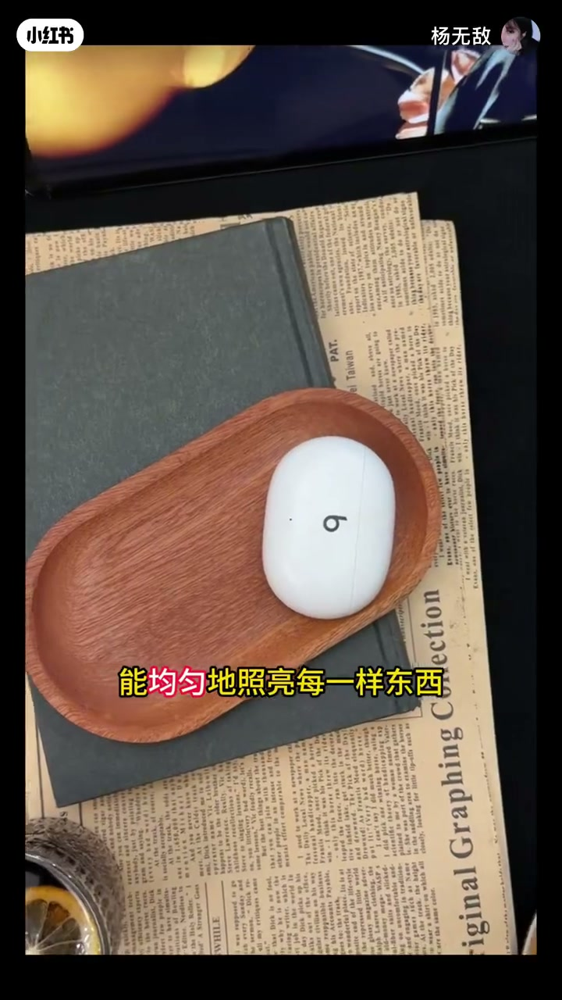
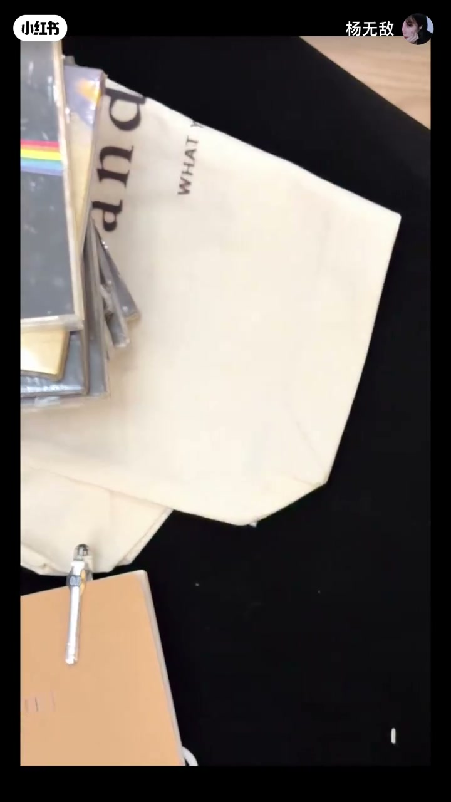
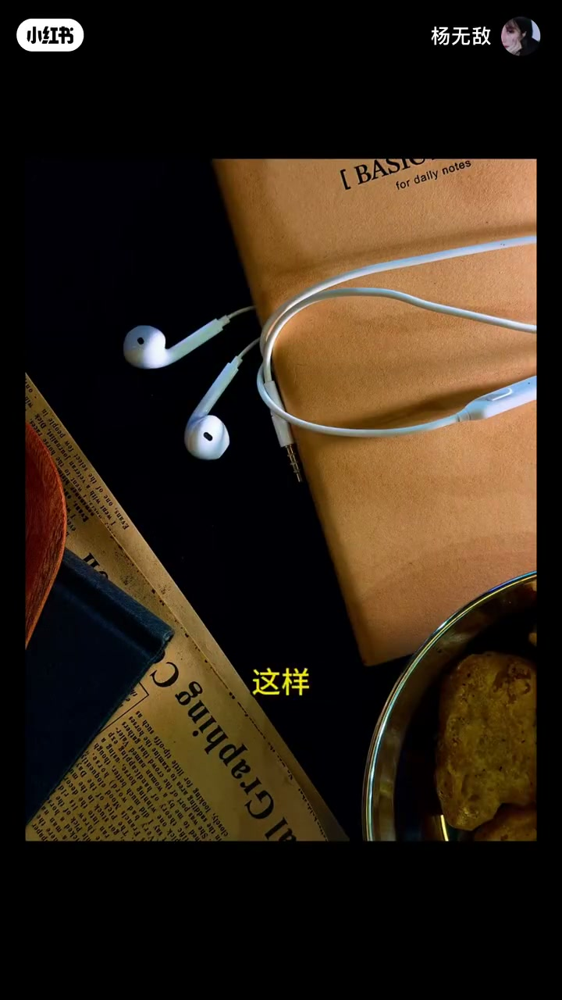
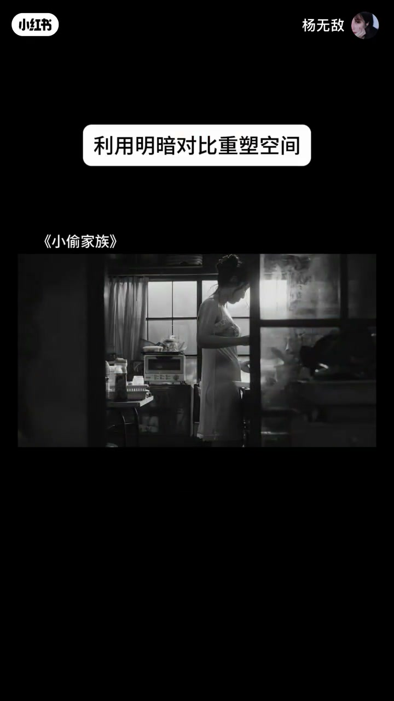
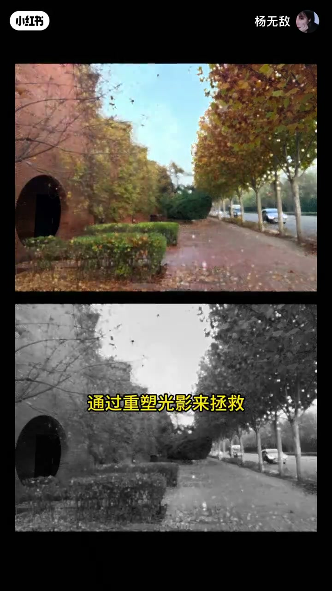
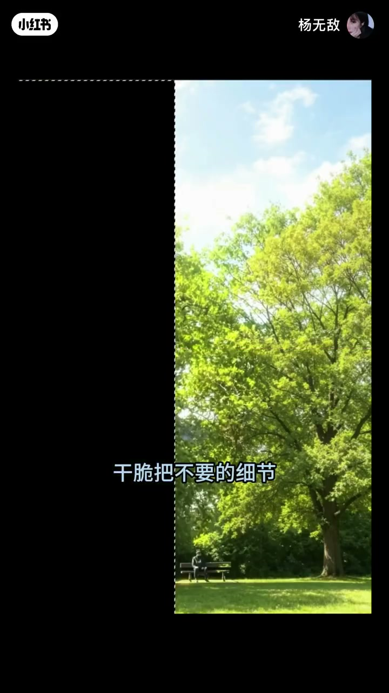

内容要点
一支 1 分 33 秒的光影课：精心布置的场景拍出来还是乱，问题不在杂物，而在那盏直射大灯。大灯均匀照亮一切，也让影子全部消失；换成氛围小灯，影回来吞没多余细节，画面就有了主次。视频还把原理延伸到修图：用黑色吞没不要的细节，可以拯救手机里的废片。
知识结构
精心布置了半天，拍出来还是乱乱的——问题出在灯。
关掉直射大灯、换成两个氛围小灯，画面立刻好多了。大灯均匀照亮每一样东西，同时让影子全部消失。
需要让影去吞没多余的细节，有光的地方才格外突出。照片看着乱，不是因为环境乱，而是因为光太匀、没有主次。
很多电影场景看似打乱却一点也不显脏、很耐看。手机里的废片也可以在修图时通过重塑光影拯救，甚至把不要的细节涂成纯黑色。
照片乱不是杂物多，而是光太匀导致没有主次。让影子去吞没多余细节，光所及之处才格外突出——这一原理既适用于布灯，也适用于修图。
00:00-00:07精心布置，还是乱
视频开头，一位主角情绪低落：「你看，我精心布置了半天，可为啥拍出来还是乱乱的？」另一位没有急着安慰，而是让他先看一样东西：「可能是因为……它。」
00:07-00:33关掉大灯，换小灯
「你看，我们关掉这盏大灯，换成两个更有氛围的小灯。」镜头切到改造后的画面，「哎，这就好多了。」
原理随即点破：「因为让照片乱的，也许从来都不是你扔掉的那些垃圾，而是这盏灯。一盏直直照射下来的大灯，能均匀地照亮每一样东西，但同时它也让影子全部消失。」均匀的光消灭了影子，也就消灭了画面的层次与主次。


00:33-00:58用影去吞没细节
「可往往呢，我们需要用影去吞没多余的细节，这样，那些有光的地方才会格外突出。」小灯的光影让桌面形成明暗分区，杂物被影子的暗部吞掉，视觉自然聚焦在受光的区域。
「所以有些照片看着乱，不是因为环境乱，而是因为光太匀了，所以显得没有主次。」这句点题直接颠覆了「乱=东西多」的直觉。


00:58-01:33电影为何耐看，废片如何拯救
「没错，这也是很多电影场景看似打乱、却一点也不显脏、反而很耐看的原因。」主讲人把原理从布景延伸到电影美学——耐看的画面不是没有杂物，而是光替它做好了取舍。
「那换个思路，我们手机里存的很多废片，也可以在修图时通过重塑光影来拯救。」既然黑色的影子有吞没细节的功能，「那我要是干脆把不要的细节都涂成纯黑色呢？」——把布光思维搬到修图软件里，废片也能焕然一新。



完整转录（34段）
以下文本由 Whisper medium 模型自动转录，可能存在少量识别误差，已尽可能修正。
哎 你咋了
你看 我精心布置了半天
可能为啥拍出来还是乱乱的
可能是因为
它
它
你看 我们关掉这盏大灯（保留）
换成两个更有氛围的小灯
哎 这就好多了
这是为啥
因为让照片乱的也许从来都不是你扔掉的那些垃圾
而是这盏灯
一盏直直照射下来的大灯（保留）
能均匀的照亮每一样东西
但同时它也让影子全部消失
可往往呢
我们需要用影去吞没多余的细节
这样
那些有光的地方才会格外突出
所以有些照片看着乱
不是因为环境乱
而是因为光太匀了
所以显得没有主次
没错 这也是很多电影场景
看似打乱却一点也不显脏
反而很耐看的原因
那换个思路
我们手机里存的很多废片（保留）
也可以在修图时通过重塑光影来拯救
既然黑色的影子
有吞没细节的功能
那我要是
干脆把不要的细节都涂成纯黑色呢
感谢观看